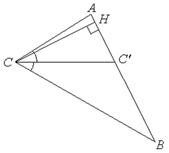

П 5.1 № 8.
Докажите, что в треугольнике  с
биссектрисой выполняется соотношение .
с
биссектрисой выполняется соотношение .
с
биссектрисой выполняется соотношение .Доказательство:

1) ;
2) .
Отсюда следует, что ,
что и требовалось доказать.
с
биссектрисой выполняется соотношение .